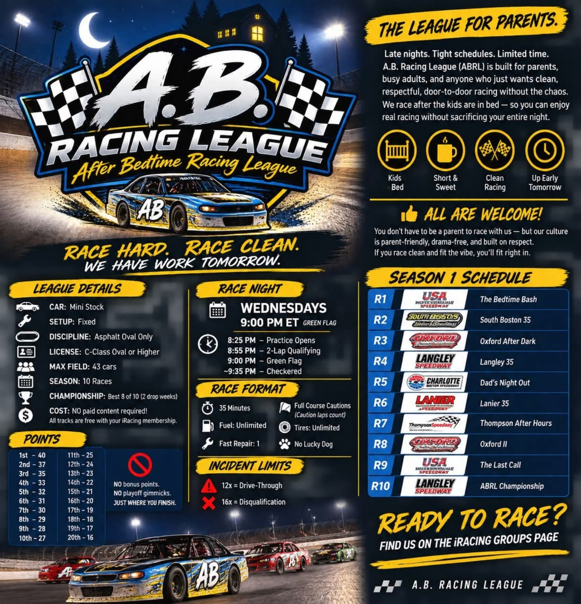

01
Kids in Bed
Race after the important stuff is handled.
Late nights. Tight schedules. Limited time. ABRL is built for parents, busy adults, and anyone who wants clean, respectful, door-to-door racing without the chaos.

Competitive racing without the marathon. Parent-friendly, drama-free, and focused on respectful racing.
Race after the important stuff is handled.
Practice, qualifying, and a 35-minute feature.
Hard racing is encouraged. Chaos is not.
Finish the race and still function Thursday morning.
All tracks are included with a standard iRacing membership.
You do not have to be a parent to race with us. Race clean, respect the people around you, and fit the vibe.